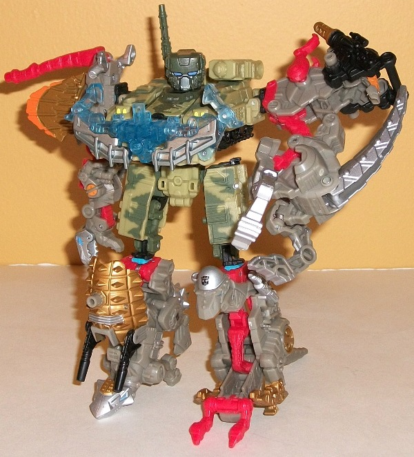
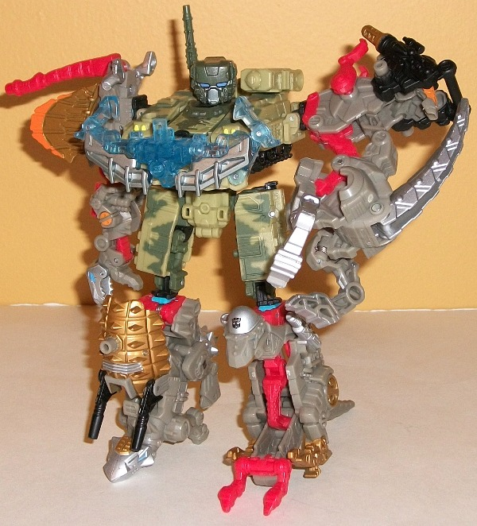

Transformers
Power Core Combiners
Transformers
Power Core Combiners

 

In a bit of a new twist,
for the "in-between-movie-lines" period of mid-2010 through early 2011,
Hasbro released a line made up entirely of combiners and Minicons. Entitled
"Power Core Combiners", the line came in two sizes-- deluxe-priced 2-packs,
which included a "standard" Power Core Combiner (roughly the size of a
scout). These "PCCs" for short had three modes; vehicle, robot, and combiner
torso mode. The other 'bot in the 2-packs was a Minicon, packing the same
attachment ports as the
Armada
toys and also
coming with three modes; weapon, robot, and combiner chest armor. The larger
"team" voyager-priced 5-packs came with a "standard" Power Core Combiner--
the same size as those coming in the two-packs-- but instead of a Minicon,
included four "drone vehicles" which could attach (and automatically transform
as they did so) to a Power Core Combiner's torso mode as limbs to form
a unique combiner. Given that any arm drone could be switched with any
arm drone, any leg drone with any leg drone, any Minicon with another Minicon,
and any Power Core Combiner with another in the overall gestalt, this led
to literally hundreds of potential combinations for even this short-lived
line. This also led to PCC redecos being mixed in with other redeco limbs
or Minicons, thus making even teams or 2-packs consisting entirely of repaints
"new".
Unfortunately, due to various
circumstances the line didn't seem to be as successful as most other Transformers
lines from the same era. Due to the gimmicks, there were some inherent
limitations in the proportions and/or articulation of the Power Core Combiners
figures. The unusual "vehicle-to-limb only" aspect of the drones also didn't
endear them to as many Transfans as the other concurrent lines. In addition,
most of the larger retailers overstocked on Wave 1 and Wave 3 (which was,
unfortunately, a wave consisting entirely of Wave 1 repaints), thus making
it appear to the casual audience that the entire line consisted of only
a very small handful of molds, which limited its appeal there, as well.
It also had practically no media support, and no "big-name" characters
in the line. The Power Core Combiner line faded out in early 2011 as stores
began to make room for Dark of the Moon, the last two waves of the PCC
line being quite a rare sight at retail.
 Bombshock
w/ Combaticons
Bombshock
w/ Combaticons
Crankcase
w/ Destrons
Darkstream
w/ Razorbeam
Double
Clutch w/ Rallybots
Grimstone
w/ Dinobots
Heavytread
w/ Groundspike
Huffer
w/ Caliburst
Icepick
w/ Chainclaw
Leadfoot
w/ Pinpoint
Mudslinger
w/ Destructicons
Salvage
w/ Bomb-Burst
Searchlight
w/ Backwind
Skyburst
w/ Aerialbots
Skyhammer
w/ Airlift
Sledge
w/ Throttler
Smolder
w/ Chopster
Spastic/Over-Run
w/ Stunticons
Stakeout
w/ Protectobots
Steamhammer
w/ Constructicons
Steelshot
w/ Beacon
Undertow
w/ Waterlog
Windburn
w/ Darkray
Back to Model
Commentary Index